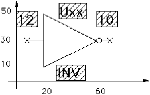
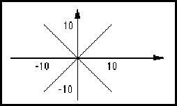

schematicPortDcPowerRecommendedVoltage ::= '('
'schematicPortDcPowerRecommendedVoltage'
voltageValue
')'
SchematicPortDcPowerRecommendedVoltage is used to specify the minimum, nominal and maximum voltage of the power supply for the proper operation of the circuit. SchematicUnits specifies the voltage units.
(setVoltage (unitRef Volts)) ... (schematicPortDcPowerRecommendedVoltage 5)
This example specifies a recommended DC voltage of 5 Volts.
schematicPortEarthGround ::= '(' 'schematicPortEarthGround'
{ <schematicPortAnalog> }
')'
schematicGlobalPortAttributes schematicPortAttributes
SchematicPortEarthGround is used in schematicPortAttributes to specify that the associated port represents a connection to an earth ground. The term "earth ground" is in accordance with the IEEE standard 315-1975, Sect. 3.9.1.
(globalPort GND
(schematicGlobalPortAttributes
(schematicPortEarthGround)))
This example describes a globalPort called GND that represents an intended connection to an earth ground.
(port GND2
(unspecifiedDirectionPort)
(schematicPortAttributes
(schematicPortEarthGround)))
This example describes a port called GND2 that the designer intended to be connected to an earth ground externally.
ieeeStandard schematicPortAcPower schematicPortAnalog schematicPortChassisGround schematicPortClock schematicPortDcPower schematicPortGround schematicPortNonLogical schematicPortOpenCollector schematicPortOpenEmitter schematicPortThreeState
schematicPortGround ::= '(' 'schematicPortGround'
{ <schematicPortAnalog> }
')'
schematicGlobalPortAttributes schematicPortAttributes
SchematicPortGround indicates that the corresponding port or global port represents a connection to ground or an intention to make a connection to ground. In this context, ground is the voltage reference for the circuit. SchematicPortGround should be used when the sending system does not identify the type of ground more precisely. No further information is available as to what kind of ground connection it is.
(globalPort GND
(schematicGlobalPortAttributes
(schematicPortGround)))
This example describes a globalPort called GND that represents an intended connection to ground.
(port GND2 (unspecifiedDirectionPort) (schematicPortAttributes (schematicPortGround)))
This example describes a port called GND2 that is intended to be connected to a ground externally.
ieeeStandard schematicPortAcPower schematicPortAnalog schematicPortChassisGround schematicPortClock schematicPortDcPower schematicPortEarthGround schematicPortNonLogical schematicPortOpenCollector schematicPortOpenEmitter schematicPortThreeState
schematicPortNonLogical ::= '(' 'schematicPortNonLogical'
')'
schematicGlobalPortAttributes schematicPortAttributes
SchematicPortNonLogical indicates that the corresponding port represents a connection to a signal that does not carry logic information. No further information is available as to what kind of signal it is.
(port IN2 (inputPort) (unused) (schematicPortAttributes (schematicPortNonLogical)))
This example shows a port called IN2 that is unused and does not carry any logical information.
ieeeStandard schematicPortAcPower schematicPortAnalog schematicPortChassisGround schematicPortClock schematicPortDcPower schematicPortEarthGround schematicPortGround schematicPortOpenCollector schematicPortOpenEmitter schematicPortThreeState
schematicPortOpenCollector ::= '(' 'schematicPortOpenCollector'
')'
schematicGlobalPortAttributes schematicPortAttributes
SchematicPortOpenCollector indicates that the corresponding port represents a connection to the collector of a transistor. In terms of logic signals, the output state is typically a 0 or weak 1.
(port IN2 (outputPort) (schematicPortAttributes (schematicPortOpenCollector)))
This example defines a port called IN2 that is intended to represent an open collector.
ieeeStandard schematicPortAcPower schematicPortAnalog schematicPortChassisGround schematicPortClock schematicPortDcPower schematicPortEarthGround schematicPortGround schematicPortNonLogical schematicPortOpenEmitter schematicPortThreeState
schematicPortOpenEmitter ::= '(' 'schematicPortOpenEmitter'
')'
schematicGlobalPortAttributes schematicPortAttributes
SchematicPortOpenEmitter indicates that the corresponding port represents a connection to the emitter of a transistor. In terms of logic signals, the output state is typically a 1 or weak 0.
(port IN2 (outputPort) (schematicPortAttributes (schematicPortOpenEmitter)))
This example defines a port called IN2 that is intended to represent an open emitter.
ieeeStandard schematicPortAcPower schematicPortAnalog schematicPortChassisGround schematicPortClock schematicPortDcPower schematicPortEarthGround schematicPortGround schematicPortNonLogical schematicPortOpenCollector schematicPortThreeState
schematicPortPower ::= '(' 'schematicPortPower'
')'
schematicGlobalPortAttributes schematicPortAttributes
SchematicPortPower is used to indicate that a power supply is represented by the globalPort, or that the port normally carries power.
(globalPort PWR (schematicGlobalPortAttributes (schematicPortPower)))
This example describes a globalPort called PWR that is intended to represent a power supply.
schematicPortChassisGround schematicPortClock schematicPortDcPower schematicPortEarthGround schematicPortGround
schematicPortStyle ::= '(' 'schematicPortStyle'
( narrowPort | widePort )
')'
schematicMasterPortTemplate schematicSymbolPortTemplate
SchematicPortStyle indicates the style of a port template, indicating whether it is intended to represent a wide port or a narrow port. There are no semantic rules governing whether narrowPort or widePort styles are to be used with ports or port bundles as this is dependent on the originating system.
(schematicSymbolPortTemplate A ...
(schematicPortStyle (widePort)))
...
(cell C ...
(cluster C1
(interface ...
(portBundle B (portList ...)))
(clusterHeader ...)
(schematicSymbol ANSI ...
(schematicSymbolPortImplementation IN
(portRef B)
(schematicSymbolPortTemplateRef
A)
...))))
This example illustrates the use of a template with schematicPortStyle of widePort, to represent the port bundle B.
schematicPortThreeState ::= '(' 'schematicPortThreeState'
')'
schematicGlobalPortAttributes schematicPortAttributes
SchematicPortThreeState indicates that the corresponding port is a three-state port, i.e. can be binary 1, binary 0 or high-impedance.
(port IN2 (outputPort) (schematicPortAttributes (schematicPortThreeState)))
This example defines a port called IN2 that is intended to represent a three-state port.
ieeeStandard schematicPortAcPower schematicPortAnalog schematicPortChassisGround schematicPortClock schematicPortDcPower schematicPortEarthGround schematicPortGround schematicPortNonLogical schematicPortOpenCollector schematicPortOpenEmitter
schematicRequiredDefaults ::= '(' 'schematicRequiredDefaults'
schematicMetric
fontRef
textHeight
')'
SchematicRequiredDefaults sets defaults which are required when any schematic data is present in the EDIF data. These defaults may be overridden later, e.g. by physicalScaling or schematicUnits.
(edifHeader
(edifLevel 0) (keywordMap ...)
(unitDefinitions ...)
(fontDefinitions ...)
(physicalDefaults
(schematicRequiredDefaults
(schematicMetric
(setDistance (unitRef mm))
(noHotspotGrid)
(nominalHotspotGrid 10))
(fontRef courier)
(textHeight 10))))
schematicRipperImplementation ::= '(' 'schematicRipperImplementation'
implementationNameDef
schematicRipperTemplateRef
transform
{ <implementationNameDisplay> | <nameInformation> | property |
propertyDisplay | propertyDisplayOverride | propertyOverride }
')'
A schematicRipperImplementation places a schematicRipperTemplate on a page, and is used to associate one interconnect with another.
The schematicRipperImplementation construct gives a name for the ripper, and indicates the schematicRipperTemplate that is to be used to represent the ripper on the schematic page. The actual positioning of the schematicRipperTemplate is done by transform.
Association between the schematicRipperImplementation and its nets or busses is defined in the schematicNetJoined and schematicBusJoined constructs, which may reference a hotspot of a particular schematicRipperImplementation.
For level 0, each interconnect associated with a ripper must have at least one common signal with at least one other interconnect associated with the same ripper.
For level 0, a schematicRipperImplementation must be referenced by at least one schematic bus.
(schematicRipperImplementation I1
(schematicRipperTemplateRef
BUS_TO_BUS_RIPPER)
(transform (origin (pt 200 300))))
(schematicRipperImplementation I2
(schematicRipperTemplateRef
BUS_TO_NET_RIPPER)
(transform (origin (pt 500 600))))
This example shows two different rippers, with implementation names I1 and I2, which each refer to different schematicRipperTemplates. They could of course refer to the same template.
schematicJunctionImplementation
schematicRipperImplementationRef ::= '(' 'schematicRipperImplementationRef'
implementationNameRef
')'
SchematicRipperImplementationRef is used to reference a schematicRipperImplementation.
(schematicRipperImplementationRef I1)
This example shows a reference to a schematicRipperImplementation whose implementationNameDef is I1.
schematicBusJoined schematicNetJoined schematicRipperImplementation
schematicRipperTemplate ::= '(' 'schematicRipperTemplate'
libraryObjectNameDef
schematicTemplateHeader
{ annotate | commentGraphics | figure | <implementationNameDisplay> |
propertyDisplay | ripperHotspot | schematicComplexFigure }
')'
SchematicRipperTemplate is a graphical template used by a schematicRipperImplementation to represent the graphics of the schematicRipperImplementation. Typically, it will be a simple oblique line or similar, but more complex graphics and annotation could be incorporated if necessary.
A ripper typically has two (occasionally more) hotspots, and as these need to be identifiable individually for connections to be made to them, they are represented by ripperHotspot.
(schematicRipperTemplate BUS_BUS_RIPPER
(schematicTemplateHeader ...)
(figure BUS_LINES
(path (pointList (pt 0 0) (pt 10 -10))))
(ripperHotspot END1 (hotspot (pt 0 0)
(schematicWireAffinity (wideWire))))
(ripperHotspot END2 (hotspot (pt 10 -10)
(schematicWireAffinity (wideWire)))))
In this example, the schematicRipperTemplate represents a ripper where each end is intended to be connected to a schematicBus.
schematicRipperTemplateRef ::= '(' 'schematicRipperTemplateRef'
libraryObjectNameRef
[ libraryRef ]
')'
SchematicRipperTemplateRef is used to reference a schematicRipperTemplate, which is held in a library.
(schematicRipperTemplateRef BUS_TO_BUS_RIPPER (libraryRef SYSTEM))
This example shows a reference to a schematicRipperTemplate called BUS_TO_BUS_RIPPER in a library called SYSTEM.
schematicSubBus ::= '(' 'schematicSubBus'
interconnectNameDef
schematicSubInterconnectHeader
schematicBusJoined
{ comment | <schematicBusDetails> | schematicBusSlice |
<schematicInterconnectAttributeDisplay> | userData }
')'
A schematicSubBus is analogous to schematicSubNet, in that it provides further structural information about the connectivity of the schematicBus, schematicBusSlice or schematicSubBus that contains it.
The ports and hotspots referenced in the schematicBusJoined of a schematicSubBus must be referenced in the schematicBusJoined of the immediately-containing schematicBus, schematicBusSlice or schematicSubBus.
SchematicBusDetails provides the details of the schematicSubBus, either as the graphical implementation of the subbus, or as a further set of subbusses.
SchematicInterconnectAttributeDisplay provides display slots for attributes of the subbus, or its parent busslices, subbusses or bus.
The width of a subbus is the same as that of the enclosing bus slice or bus.
(schematicBus A (signalGroupRef A)
(SchematicInterconnectHeader ...)
(schematicBusJoined
(portJoined (portRef MP1) (portRef MP2)) ...)
(schematicBusDetails
(schematicSubBusSet
(schematicSubBus S1
(schematicSubInterconnectHeader ...)
(schematicBusJoined
(portJoined (portRef MP1)) ...)
(schematicBusDetails
(schematicBusGraphics ...)))
(schematicSubBus S2
(schematicSubInterconnectHeader ...)
(schematicBusJoined
(portJoined (portRef MP2)) ...) ...))))
In this example, the schematicBus A has two schematicSubBusses. The first, S1, joins the master port MP1 and the second, S2, joins the master port MP2.
schematicSubBusSet ::= '(' 'schematicSubBusSet'
{ schematicSubBus }
')'
SchematicSubBusSet gathers together all subbusses of a schematicBus, schematicSubBus or schematicBusSlice. When the details of a bus are described, this may be used as an alternative to a graphical implementation to provide further substructure.
(schematicBus BUS1 ...
(schematicBusDetails
(schematicSubBusSet
(schematicSubBus SUB1 ...)
(schematicSubBus SUB2 ...) ...)))
schematicSubInterconnectHeader ::= '(' 'schematicSubInterconnectHeader'
{ <criticality> | documentation | interconnectDelay | <nameInformation>
| property }
')'
schematicSubBus schematicSubNet
SchematicSubInterconnectHeader gathers together information relating to the schematic sub-interconnect (subbus, subnet) as a whole.
(schematicSubInterconnectHeader (interconnectDelay ...) (criticality ...) (property ...) ...)
interconnectHeader schematicInterconnectHeader
schematicSubNet ::= '(' 'schematicSubNet'
interconnectNameDef
schematicSubInterconnectHeader
schematicNetJoined
{ comment | <schematicInterconnectAttributeDisplay> |
<schematicNetDetails> | userData }
')'
A schematicSubNet provides further structural information about the connectivity of the schematicNet or schematicSubNet that contains it.
The ports referenced in a schematicSubNet must be referenced in the schematicNetJoined of the immediately-containing schematicNet or schematicSubNet.
SchematicNetDetails provides details of the subnet, either as a graphical implementation, or as a further set of subnets.
(schematicNet NET1 (signalRef SIG1)
(schematicInterconnectHeader ...)
(schematicNetJoined
(portJoined (portRef MP1)
(portInstanceRef P1 (instanceRef I1)))
...)
(schematicNetDetails
(schematicSubNetSet
(schematicSubNet SUBNET1
(SchematicSubInterconnectHeader ...)
(schematicNetJoined
(portJoined (portRef MP1)))
(schematicNetDetails
(schematicNetGraphics ...)))
(schematicSubNet SUBNET2
(SchematicSubInterconnectHeader ...)
(schematicNetJoined
(portJoined
(portInstanceRef P1 (instanceRef I1)))) ...)))
...)
In this example, the connectivity of the schematicNet is described by two schematicSubNets, SUBNET1 and SUBNET2
schematicSubNetSet ::= '(' 'schematicSubNetSet'
{ schematicSubNet }
')'
SchematicSubNetSet gathers together all subnets of a schematicNet or schematicSubNet. When the details of a net are described, this may be used as an alternative to a graphical implementation to provide further substructure.
(schematicNet NET1 ...
(schematicNetDetails
(schematicSubNetSet
(schematicSubNet SUB1 ...)
(schematicSubNet SUB2 ...) ...)))
schematicSymbol ::= '(' 'schematicSymbol'
viewNameDef
schematicSymbolHeader
{ annotate | <cellNameDisplay> | cellPropertyDisplay |
clusterPropertyDisplay | comment | commentGraphics | <designatorDisplay>
| figure | <implementationNameDisplay> | <instanceNameDisplay> |
<instanceWidthDisplay> | propertyDisplay | schematicComplexFigure |
schematicSymbolPortImplementation | userData | <viewNameDisplay> }
')'
SchematicSymbol is used to describe a symbol for use in a schematicView.
A schematic symbol is meant to be used as a graphical representation for a cell, in another cell's drawing. Its graphics are described in its own coordinate space.

(schematicSymbol SYMBOL
(schematicSymbolHeader ...)
(cellNameDisplay
(display FG2
(transform (origin (pt 30 0)))))
(designatorDisplay
(addDisplay
(display FG2
(transform (origin (pt 30 45))))))
(figure FG1
(polygon (pointList (pt 20 10) (pt 60 30)
(pt 20 50)))
(circle (pt 60 30) (pt 65 30))
(path (pointList (pt 10 30) (pt 20 30)))
(path (pointList (pt 65 30) (pt 70 30))))
(propertyDisplay ...)
(schematicSymbolPortImplementation A_HOTSPOT
(portRef A)
(schematicSymbolPortTemplateRef ...)
(transform (origin (pt 10 30)))
(portAttributeDisplay
(designatorDisplay
(addDisplay
(display FG2
(transform (origin (pt 0 40))))))))
(schematicSymbolPortImplementation Y_HOTSPOT
(portRef Y) ...)
...)
This example shows how a schematic symbol, representing an inverter, might be described.
The crosses marking the ports are specified in the schematicSymbolPortTemplate referenced for each port implementation. The input port (on the left) has identifier A.
schematicSymbolBorder ::= '(' 'schematicSymbolBorder'
schematicSymbolBorderTemplateRef
transform
{ propertyDisplayOverride | propertyOverride }
')'
SchematicSymbolBorder is an instance of a schematicSymbolBorderTemplate, and is used to provide a border for a symbol. It is not inherited by an instance of the symbol, in the same way that commentGraphics is not inherited.
(schematicSymbolBorder (schematicSymbolBorderTemplateRef BORDER) (transform (origin (pt 0 0))))
This schematicSymbolBorder references a template named BORDER, and places it at (pt 0 0) in the symbol.
schematicSymbolBorderTemplate ::= '(' 'schematicSymbolBorderTemplate'
libraryObjectNameDef
schematicTemplateHeader
usableArea
{ annotate | commentGraphics | figure | propertyDisplay |
schematicComplexFigure }
')'
SchematicSymbolBorderTemplate provides a template for the graphics associated with the border of a symbol. This typically includes graphics for the border itself, company logos, etc.
UsableArea represents the area within the symbol border that is available for drawing the symbol itself.
(schematicSymbolBorderTemplate SYMBOL_BORDER (schematicTemplateHeader ...) (usableArea ...) (figure ...) (annotate ...) ...)
schematicSymbolBorderTemplateRef ::= '(' 'schematicSymbolBorderTemplateRef'
libraryObjectNameRef
[ libraryRef ]
')'
SchematicSymbolBorderTemplateRef is a reference to a schematicSymbolBorderTemplate.
(schematicSymbolBorderTemplateRef SYMBOL_BORDER)
schematicSymbolHeader ::= '(' 'schematicSymbolHeader'
schematicUnits
{ <backgroundColor> | <derivedFrom> | documentation |
<nameInformation> | <originalBoundingBox> | <pageSize> |
<previousVersion> | property | <schematicSymbolBorder> | <status> }
')'
SchematicSymbolHeader contains data that relates to the entire schematic symbol.
(schematicSymbolHeader (schematicUnits) (status ...) (documentation ...) (pageSize ...) ...)
documentationHeader edifHeader libraryHeader pageHeader schematicSymbolHeader schematicTemplateHeader schematicViewHeader
schematicSymbolPortImplementation ::= '(' 'schematicSymbolPortImplementation'
symbolPortImplementationNameDef
portRef
schematicSymbolPortTemplateRef
transform
{ <portAttributeDisplay> | propertyDisplayOverride | propertyOverride }
')'
SchematicSymbolPortImplementation represents the graphical implementation of a port in a symbol.
The port may be a single-bit port, a portBundle. There may be more than one schematicSymbolPortImplementation for each port or portBundle. Each is named using symbolPortImplementationNameDef so that it can be identified, e.g. from within schematic interconnects.
SchematicSymbolPortImplementation references a schematicSymbolPortTemplate, and provides a transform to define its position within the symbol. All the graphics representing the symbol port must be in the schematicSymbolPortTemplate.
Within schematicSymbolPortImplementation, display positions may be given for the port attributes.
(schematicSymbolPortImplementation IN (portRef IN) (schematicSymbolPortTemplateRef SYMBOL_PORT) (transform (origin (pt 100 200))))
In this implementation of the port named IN, a template named SYMBOL_PORT is positioned at the point (pt 100 200).
port portBundle schematicMasterPortImplementation
schematicSymbolPortImplementationRef ::= '(' 'schematicSymbolPortImplementationRef'
symbolPortImplementationNameRef
schematicInstanceImplementationRef
')'
schematicBusJoined schematicNetJoined
SchematicSymbolPortImplementationRef references a schematicSymbolPortImplementation.
(schematicSymbolPortImplementationRef IN (schematicInstanceImplementationRef INST1))
schematicSymbolPortImplementation
schematicSymbolPortTemplate ::= '(' 'schematicSymbolPortTemplate'
libraryObjectNameDef
schematicTemplateHeader
hotspot
portDirectionIndicator
{ annotate | commentGraphics | figure | <implementationNameDisplay> |
<portAttributeDisplay> | propertyDisplay | schematicComplexFigure |
<schematicPortAttributes> | <schematicPortStyle> }
')'
SchematicSymbolPortTemplate provides a graphical template for the implementation of a port within a symbol. It has a single hotspot. Display positions may be provided for the port attributes.
(schematicSymbolPortTemplate SYMBOL_PORT
(schematicTemplateHeader ...)
(hotspot (pt 0 0))
(unrestricted)
(figure LINES
(path (pointList (pt -10 10) (pt 10 -10)))
(path (pointList (pt -10 -10) (pt 10 10)))))
In this example, a simple cross is used to represent the graphics of a symbol port, as shown in the figure below.

schematicSymbolPortImplementation
schematicSymbolPortTemplateRef ::= '(' 'schematicSymbolPortTemplateRef'
libraryObjectNameRef
[ libraryRef ]
')'
schematicSymbolPortImplementation
SchematicSymbolPortTemplateRef is a reference to a schematicSymbolPortTemplate.
(schematicSymbolPortTemplateRef SYMBOL_PORT)
schematicSymbolRef ::= '(' 'schematicSymbolRef'
viewNameRef
')'
schematicInstanceImplementation
SchematicSymbolRef references a schematic symbol. It is used in the context of schematicInstanceImplementation to indicate which symbol should be used to represent the instance. The viewNameRef refers to a viewNameDef defined in the cluster referenced by the symbol.
(instance nand12 (clusterRef CL1 (cellRef NAND)) ...) ... (schematicInstanceImplementation &123 (instanceRef nand12) (schematicSymbolRef symbol) (transform (origin (pt 100 200))) (designatorDisplay ...) (instancePortAttributeDisplay SPI1 (portRef IN) ...) ...)
In this example, there must be a view named symbol defined in the cluster CL1 of cell NAND.
schematicTemplateHeader ::= '(' 'schematicTemplateHeader'
schematicUnits
{ <backgroundColor> | documentation | <nameInformation> |
<originalBoundingBox> | property | <status> }
')'
pageBorderTemplate pageTitleBlockTemplate schematicFigureMacro schematicGlobalPortTemplate schematicInterconnectTerminatorTemplate schematicJunctionTemplate schematicMasterPortTemplate schematicOffPageConnectorTemplate schematicOnPageConnectorTemplate schematicRipperTemplate schematicSymbolBorderTemplate schematicSymbolPortTemplate
SchematicTemplateHeader provides header information for various templates. This may include the definition of the units that are used in the template.
(schematicTemplateHeader
(schematicUnits
(schematicMetric
(setDistance (unitRef mm_10)) ...)))
This schematicTemplateHeader defines the typical port spacing within the template to be in 200.
geometryMacroHeader pageHeader schematicSymbolHeader technology
schematicUnits ::= '(' 'schematicUnits'
{ <schematicMetric> | <setAngle> | <setCapacitance> | <setFrequency>
| <setTime> | <setVoltage> }
')'
physicalScaling schematicSymbolHeader schematicTemplateHeader schematicViewHeader
SchematicUnits defines the units for schematicViews and schematic templates. It may be specified as a default for the entire data in edifHeader, for a library in libraryHeader or for a particular template or view in the view or template header. Refer to connectivityUnits for a full example.
connectivityUnits documentationUnits interfaceUnits logicModelUnits maskLayoutUnits pcbLayoutUnits symbolicLayoutUnits